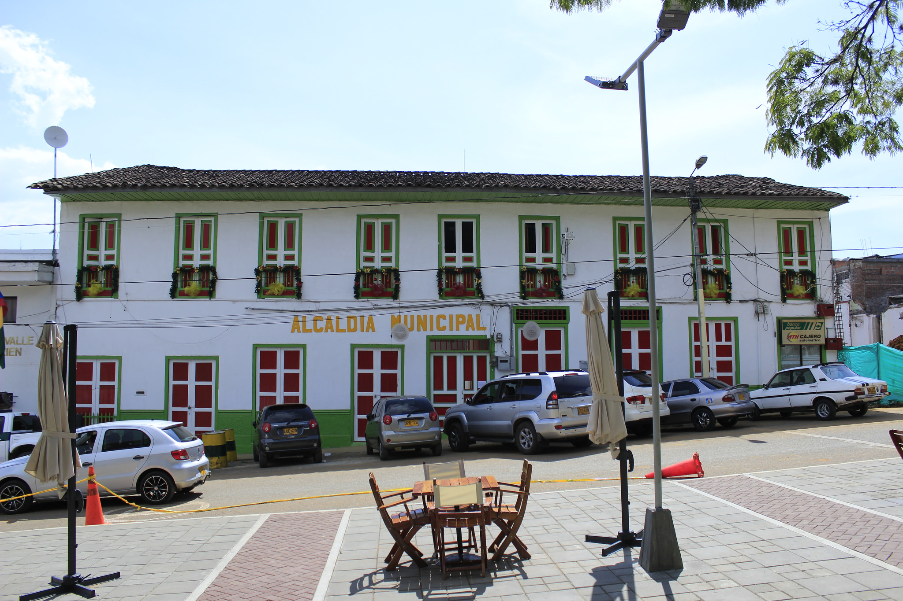

Memoria local · Calima El Darién
Un lugar que se cuenta de boca en boca.
La memoria indígena, los caminos de los colonos y las leyendas del agua forman una historia que todavía se escucha en las montañas.
Historias para mirar el paisaje con otros ojos.
Estas referencias acercan al visitante a la cultura Calima y a la tradición oral que hace especial a El Darién.

Un pueblo nacido entre neblina y caminos.
La historia de Calima El Darién une pueblos originarios, colonos, ríos y una comunidad que convirtió su paisaje en identidad.
Fundación y nombre
La fecha de fundación registrada para Calima es el 1 de agosto de 1907. La cabecera municipal se conoce como El Darién porque Nicolás Restrepo, uno de sus fundadores, encontró semejanza entre estos paisajes y la región del Darién en el Chocó.
Antes de 1907El territorio ya guardaba la memoria de la cultura Calima y sus antiguos caminos.
1 ago. 1907Fundación de Calima, según la referencia histórica consultada.
1939Calima alcanza la categoría de municipio.
Los símbolos que la representan
- Nombre: Calima recuerda la neblina que entra por el cañón del río Bravo y también la cultura prehispánica de la región.
- El Darién: nombre de la cabecera municipal, ligado a la comparación con el Darién chocoano.
- El lago: paisaje y motor turístico que identifica al municipio.
- Gentilicio: a sus habitantes se les llama dariénitas.
Consulta los símbolos oficiales en la Alcaldía de Calima El Darién ↗.